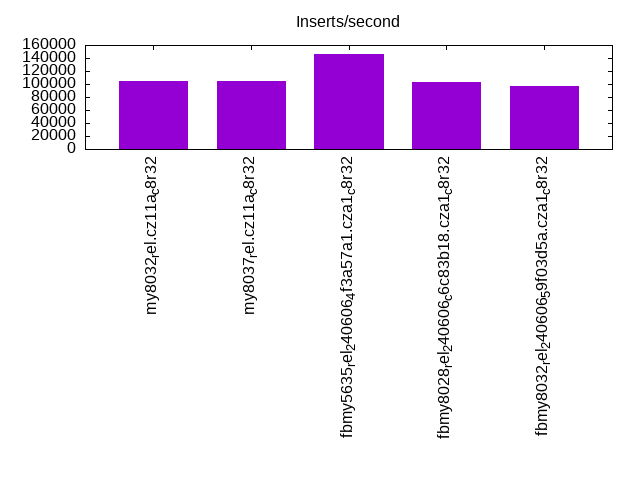
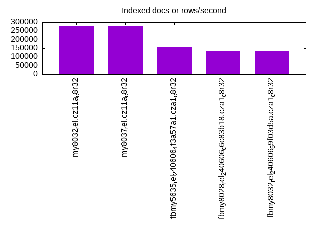
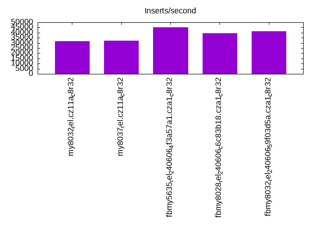
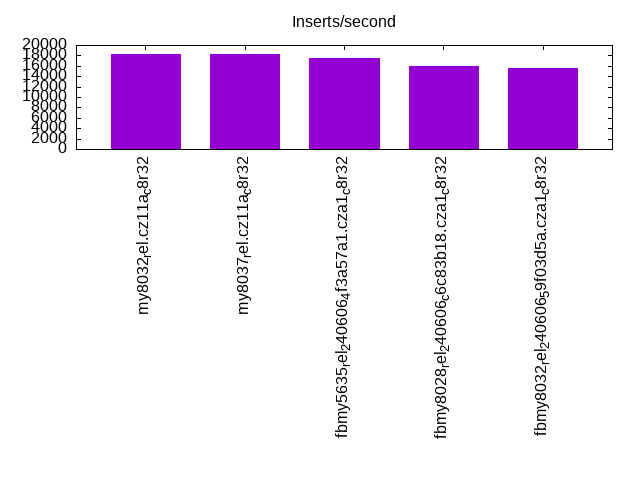
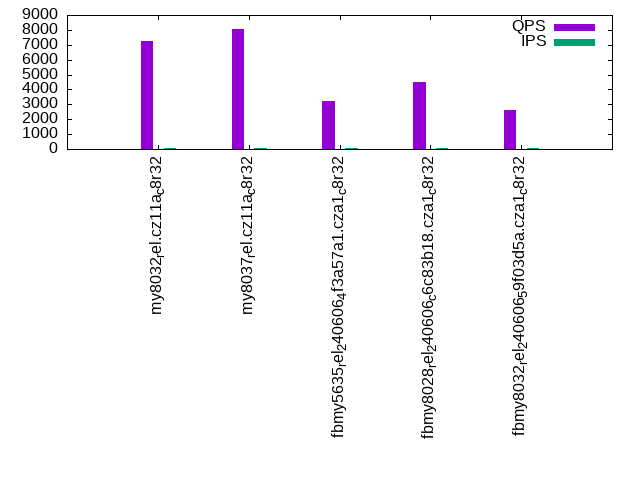
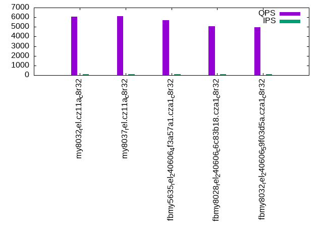
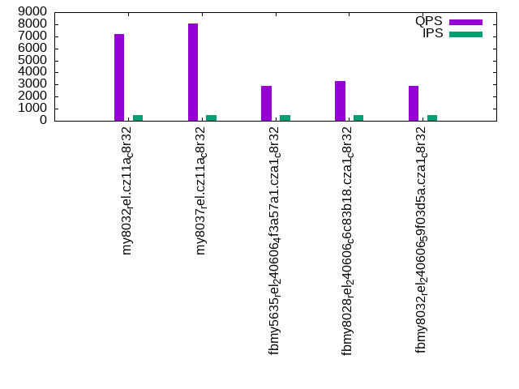
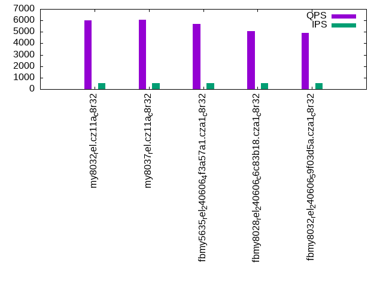
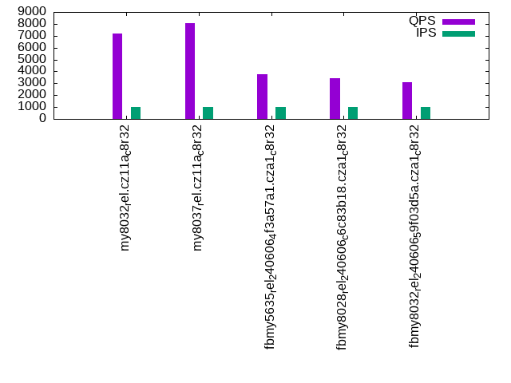
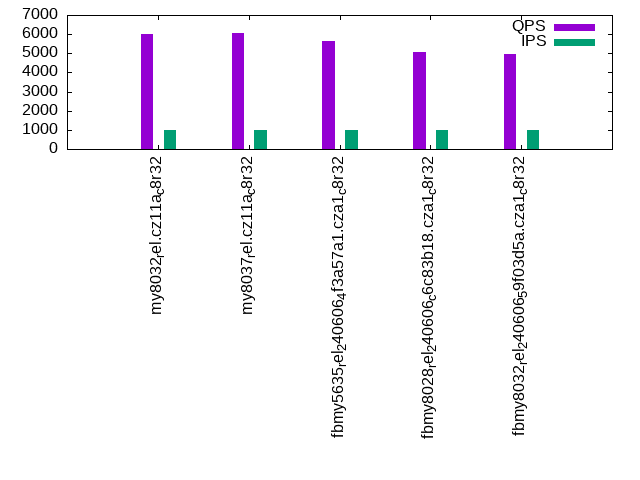

This is a report for the insert benchmark with 30M docs and 1 client(s). It is generated by scripts (bash, awk, sed) and Tufte might not be impressed. An overview of the insert benchmark is here and a short update is here. Below, by DBMS, I mean DBMS+version.config. An example is my8020.c10b40 where my means MySQL, 8020 is version 8.0.20 and c10b40 is the name for the configuration file.
The test server has 8 AMD cores, 16G RAM and an NVMe SSD. It is described here as the Beelink. The benchmark was run with 1 client and there were 1 or 3 connections per client (1 for queries or inserts without rate limits, 1+1 for rate limited inserts+deletes). It uses 1 table. It loads 30M rows per table without secondary indexes, creates 3 secondary indexes per table, then inserts 40m+10m rows per table with a delete per insert to avoid growing the table. It then does 6 read+write tests for 1800s each that do queries as fast as possible with 100,100,500,500,1000,1000 inserts/s and the same for deletes/s per client concurrent with the queries. The database is cached in memory. Clients and the DBMS share one server. The per-database configs are in the per-database subdirectories here.
The tested DBMS are:
The numbers are inserts/s for l.i0, l.i1 and l.i2, indexed docs (or rows) /s for l.x and queries/s for qr100, qp100 thru qr1000, qp1000" The values are the average rate over the entire test for inserts (IPS) and queries (QPS). The range of values for IPS and QPS is split into 3 parts: bottom 25%, middle 50%, top 25%. Values in the bottom 25% have a red background, values in the top 25% have a green background and values in the middle have no color. A gray background is used for values that can be ignored because the DBMS did not sustain the target insert rate. Red backgrounds are not used when the minimum value is within 80% of the max value.
| dbms | l.i0 | l.x | l.i1 | l.i2 | qr100 | qp100 | qr500 | qp500 | qr1000 | qp1000 |
|---|---|---|---|---|---|---|---|---|---|---|
| my8032_rel.cz11a_c8r32 | 104895 | 277779 | 31898 | 18248 | 7235 | 6051 | 7207 | 6018 | 7176 | 6024 |
| my8037_rel.cz11a_c8r32 | 105263 | 280375 | 32284 | 18349 | 8056 | 6133 | 8084 | 6058 | 8075 | 6075 |
| fbmy5635_rel_240606_4f3a57a1.cza1_c8r32 | 145631 | 156250 | 45045 | 17575 | 3204 | 5682 | 2902 | 5691 | 3740 | 5637 |
| fbmy8028_rel_240606_c6c83b18.cza1_c8r32 | 102389 | 136364 | 39331 | 15873 | 4477 | 5059 | 3258 | 5074 | 3401 | 5085 |
| fbmy8032_rel_240606_59f03d5a.cza1_c8r32 | 96463 | 133929 | 41408 | 15504 | 2586 | 4961 | 2913 | 4925 | 3111 | 4960 |
This table has relative throughput, throughput for the DBMS relative to the DBMS in the first line, using the absolute throughput from the previous table. Values less than 0.95 have a yellow background. Values greater than 1.05 have a blue background.
| dbms | l.i0 | l.x | l.i1 | l.i2 | qr100 | qp100 | qr500 | qp500 | qr1000 | qp1000 |
|---|---|---|---|---|---|---|---|---|---|---|
| my8032_rel.cz11a_c8r32 | 1.00 | 1.00 | 1.00 | 1.00 | 1.00 | 1.00 | 1.00 | 1.00 | 1.00 | 1.00 |
| my8037_rel.cz11a_c8r32 | 1.00 | 1.01 | 1.01 | 1.01 | 1.11 | 1.01 | 1.12 | 1.01 | 1.13 | 1.01 |
| fbmy5635_rel_240606_4f3a57a1.cza1_c8r32 | 1.39 | 0.56 | 1.41 | 0.96 | 0.44 | 0.94 | 0.40 | 0.95 | 0.52 | 0.94 |
| fbmy8028_rel_240606_c6c83b18.cza1_c8r32 | 0.98 | 0.49 | 1.23 | 0.87 | 0.62 | 0.84 | 0.45 | 0.84 | 0.47 | 0.84 |
| fbmy8032_rel_240606_59f03d5a.cza1_c8r32 | 0.92 | 0.48 | 1.30 | 0.85 | 0.36 | 0.82 | 0.40 | 0.82 | 0.43 | 0.82 |
This lists the average rate of inserts/s for the tests that do inserts concurrent with queries. For such tests the query rate is listed in the table above. The read+write tests are setup so that the insert rate should match the target rate every second. Cells that are not at least 95% of the target have a red background to indicate a failure to satisfy the target.
| dbms | qr100.L1 | qp100.L2 | qr500.L3 | qp500.L4 | qr1000.L5 | qp1000.L6 |
|---|---|---|---|---|---|---|
| my8032_rel.cz11a_c8r32 | 100 | 100 | 499 | 499 | 999 | 999 |
| my8037_rel.cz11a_c8r32 | 100 | 100 | 499 | 499 | 999 | 999 |
| fbmy5635_rel_240606_4f3a57a1.cza1_c8r32 | 100 | 100 | 499 | 499 | 999 | 999 |
| fbmy8028_rel_240606_c6c83b18.cza1_c8r32 | 100 | 100 | 499 | 499 | 999 | 999 |
| fbmy8032_rel_240606_59f03d5a.cza1_c8r32 | 100 | 100 | 499 | 499 | 999 | 999 |
| target | 100 | 100 | 500 | 500 | 1000 | 1000 |
l.i0: load without secondary indexes. Graphs for performance per 1-second interval are here.
Average throughput:
Insert response time histogram: each cell has the percentage of responses that take <= the time in the header and max is the max response time in seconds. For the max column values in the top 25% of the range have a red background and in the bottom 25% of the range have a green background. The red background is not used when the min value is within 80% of the max value.
| dbms | 256us | 1ms | 4ms | 16ms | 64ms | 256ms | 1s | 4s | 16s | gt | max |
|---|---|---|---|---|---|---|---|---|---|---|---|
| my8032_rel.cz11a_c8r32 | 98.608 | 0.995 | 0.263 | 0.133 | 0.002 | 0.082 | |||||
| my8037_rel.cz11a_c8r32 | 98.545 | 1.059 | 0.255 | 0.139 | 0.002 | 0.082 | |||||
| fbmy5635_rel_240606_4f3a57a1.cza1_c8r32 | 99.808 | 0.120 | 0.069 | 0.003 | 0.115 | ||||||
| fbmy8028_rel_240606_c6c83b18.cza1_c8r32 | 95.754 | 4.045 | 0.145 | 0.052 | 0.004 | 0.147 | |||||
| fbmy8032_rel_240606_59f03d5a.cza1_c8r32 | 78.877 | 20.915 | 0.148 | 0.056 | 0.004 | 0.106 |
Performance metrics for the DBMS listed above. Some are normalized by throughput, others are not. Legend for results is here.
ips qps rps rmbps wps wmbps rpq rkbpq wpi wkbpi csps cpups cspq cpupq dbgb1 dbgb2 rss maxop p50 p99 tag 104895 0 0 0.0 1.6 0.0 0.000 0.000 0.000 0.000 11765 17.8 0.112 14 2.0 32.6 4.1 0.082 106384 93698 my8032_rel.cz11a_c8r32 105263 0 0 0.0 1.4 0.0 0.000 0.000 0.000 0.000 11762 17.9 0.112 14 2.0 32.6 4.1 0.082 106084 94099 my8037_rel.cz11a_c8r32 145631 0 1 0.0 1.0 0.0 0.000 0.000 0.000 0.000 15051 21.9 0.103 12 1.0 2.5 0.3 0.115 61038 0 fbmy5635_rel_240606_4f3a57a1.cza1_c8r32 102389 0 2 0.2 1.3 0.0 0.000 0.002 0.000 0.000 11144 19.0 0.109 15 0.9 2.7 0.6 0.147 102887 86308 fbmy8028_rel_240606_c6c83b18.cza1_c8r32 96463 0 0 0.0 2.0 0.0 0.000 0.000 0.000 0.000 10672 18.8 0.111 16 0.9 2.7 0.6 0.106 96442 83210 fbmy8032_rel_240606_59f03d5a.cza1_c8r32
l.x: create secondary indexes.
Average throughput:
Performance metrics for the DBMS listed above. Some are normalized by throughput, others are not. Legend for results is here.
ips qps rps rmbps wps wmbps rpq rkbpq wpi wkbpi csps cpups cspq cpupq dbgb1 dbgb2 rss maxop p50 p99 tag 277779 0 0 0.0 1.2 0.0 0.000 0.000 0.000 0.000 18397 39.1 0.066 11 4.5 35.1 5.3 0.002 NA NA my8032_rel.cz11a_c8r32 280375 0 0 0.0 1.8 0.0 0.000 0.000 0.000 0.000 19419 38.8 0.069 11 4.5 35.1 5.5 0.002 NA NA my8037_rel.cz11a_c8r32 156250 0 0 0.0 1.1 0.0 0.000 0.000 0.000 0.000 173 12.2 0.001 6 2.0 3.6 2.3 0.001 NA NA fbmy5635_rel_240606_4f3a57a1.cza1_c8r32 136364 0 0 0.0 1.0 0.0 0.000 0.000 0.000 0.000 316 11.6 0.002 7 2.0 3.8 2.7 0.002 NA NA fbmy8028_rel_240606_c6c83b18.cza1_c8r32 133929 0 0 0.0 1.6 0.0 0.000 0.000 0.000 0.000 515 11.6 0.004 7 2.0 3.8 2.6 0.009 NA NA fbmy8032_rel_240606_59f03d5a.cza1_c8r32
l.i1: continue load after secondary indexes created with 50 inserts per transaction. Graphs for performance per 1-second interval are here.
Average throughput:
Insert response time histogram: each cell has the percentage of responses that take <= the time in the header and max is the max response time in seconds. For the max column values in the top 25% of the range have a red background and in the bottom 25% of the range have a green background. The red background is not used when the min value is within 80% of the max value.
| dbms | 256us | 1ms | 4ms | 16ms | 64ms | 256ms | 1s | 4s | 16s | gt | max |
|---|---|---|---|---|---|---|---|---|---|---|---|
| my8032_rel.cz11a_c8r32 | 98.280 | 1.623 | 0.095 | 0.001 | 0.102 | ||||||
| my8037_rel.cz11a_c8r32 | 98.339 | 1.575 | 0.085 | 0.001 | nonzero | 0.278 | |||||
| fbmy5635_rel_240606_4f3a57a1.cza1_c8r32 | 86.919 | 12.983 | 0.093 | 0.001 | 0.004 | 0.125 | |||||
| fbmy8028_rel_240606_c6c83b18.cza1_c8r32 | 27.809 | 71.973 | 0.165 | 0.051 | 0.003 | 0.147 | |||||
| fbmy8032_rel_240606_59f03d5a.cza1_c8r32 | 15.724 | 84.054 | 0.171 | 0.047 | 0.004 | 0.119 |
Delete response time histogram: each cell has the percentage of responses that take <= the time in the header and max is the max response time in seconds. For the max column values in the top 25% of the range have a red background and in the bottom 25% of the range have a green background. The red background is not used when the min value is within 80% of the max value.
| dbms | 256us | 1ms | 4ms | 16ms | 64ms | 256ms | 1s | 4s | 16s | gt | max |
|---|---|---|---|---|---|---|---|---|---|---|---|
| my8032_rel.cz11a_c8r32 | 51.503 | 47.191 | 1.277 | 0.029 | 0.001 | 0.108 | |||||
| my8037_rel.cz11a_c8r32 | 65.264 | 33.476 | 1.234 | 0.026 | 0.001 | nonzero | 0.284 | ||||
| fbmy5635_rel_240606_4f3a57a1.cza1_c8r32 | 85.878 | 14.015 | 0.097 | 0.007 | 0.003 | 0.125 | |||||
| fbmy8028_rel_240606_c6c83b18.cza1_c8r32 | 32.708 | 67.065 | 0.163 | 0.061 | 0.003 | 0.133 | |||||
| fbmy8032_rel_240606_59f03d5a.cza1_c8r32 | 21.754 | 78.017 | 0.168 | 0.057 | 0.004 | 0.126 |
Performance metrics for the DBMS listed above. Some are normalized by throughput, others are not. Legend for results is here.
ips qps rps rmbps wps wmbps rpq rkbpq wpi wkbpi csps cpups cspq cpupq dbgb1 dbgb2 rss maxop p50 p99 tag 31898 0 0 0.0 1.6 0.0 0.000 0.000 0.000 0.000 45595 35.7 1.429 90 6.6 37.5 9.1 0.102 33614 7299 my8032_rel.cz11a_c8r32 32284 0 0 0.0 1.4 0.0 0.000 0.000 0.000 0.000 45847 35.3 1.420 87 6.6 37.5 9.1 0.278 34013 6642 my8037_rel.cz11a_c8r32 45045 0 1 0.0 1.2 0.0 0.000 0.000 0.000 0.000 20136 42.8 0.447 76 2.3 3.0 7.1 0.125 45749 29130 fbmy5635_rel_240606_4f3a57a1.cza1_c8r32 39331 0 0 0.0 1.8 0.0 0.000 0.000 0.000 0.000 18123 41.6 0.461 85 2.5 3.3 7.0 0.147 40605 22225 fbmy8028_rel_240606_c6c83b18.cza1_c8r32 41408 0 0 0.0 1.9 0.0 0.000 0.000 0.000 0.000 19367 44.2 0.468 85 2.3 3.1 7.6 0.119 41505 35312 fbmy8032_rel_240606_59f03d5a.cza1_c8r32
l.i2: continue load after secondary indexes created with 5 inserts per transaction. Graphs for performance per 1-second interval are here.
Average throughput:
Insert response time histogram: each cell has the percentage of responses that take <= the time in the header and max is the max response time in seconds. For the max column values in the top 25% of the range have a red background and in the bottom 25% of the range have a green background. The red background is not used when the min value is within 80% of the max value.
| dbms | 256us | 1ms | 4ms | 16ms | 64ms | 256ms | 1s | 4s | 16s | gt | max |
|---|---|---|---|---|---|---|---|---|---|---|---|
| my8032_rel.cz11a_c8r32 | 75.291 | 24.577 | 0.004 | 0.127 | 0.001 | nonzero | 0.101 | ||||
| my8037_rel.cz11a_c8r32 | 76.605 | 23.258 | 0.004 | 0.131 | 0.001 | nonzero | 0.101 | ||||
| fbmy5635_rel_240606_4f3a57a1.cza1_c8r32 | 98.746 | 1.222 | 0.006 | 0.025 | nonzero | 0.001 | 0.079 | ||||
| fbmy8028_rel_240606_c6c83b18.cza1_c8r32 | 69.098 | 30.847 | 0.007 | 0.040 | 0.007 | 0.001 | 0.109 | ||||
| fbmy8032_rel_240606_59f03d5a.cza1_c8r32 | 47.310 | 52.633 | 0.006 | 0.043 | 0.007 | nonzero | 0.078 |
Delete response time histogram: each cell has the percentage of responses that take <= the time in the header and max is the max response time in seconds. For the max column values in the top 25% of the range have a red background and in the bottom 25% of the range have a green background. The red background is not used when the min value is within 80% of the max value.
| dbms | 256us | 1ms | 4ms | 16ms | 64ms | 256ms | 1s | 4s | 16s | gt | max |
|---|---|---|---|---|---|---|---|---|---|---|---|
| my8032_rel.cz11a_c8r32 | 86.679 | 13.199 | 0.001 | 0.119 | 0.001 | nonzero | 0.101 | ||||
| my8037_rel.cz11a_c8r32 | 89.495 | 10.379 | 0.001 | 0.124 | 0.001 | nonzero | 0.101 | ||||
| fbmy5635_rel_240606_4f3a57a1.cza1_c8r32 | 95.187 | 4.781 | 0.006 | 0.026 | nonzero | 0.001 | 0.079 | ||||
| fbmy8028_rel_240606_c6c83b18.cza1_c8r32 | 25.125 | 74.817 | 0.008 | 0.042 | 0.008 | nonzero | 0.089 | ||||
| fbmy8032_rel_240606_59f03d5a.cza1_c8r32 | 0.831 | 99.109 | 0.008 | 0.045 | 0.007 | nonzero | 0.079 |
Performance metrics for the DBMS listed above. Some are normalized by throughput, others are not. Legend for results is here.
ips qps rps rmbps wps wmbps rpq rkbpq wpi wkbpi csps cpups cspq cpupq dbgb1 dbgb2 rss maxop p50 p99 tag 18248 0 0 0.0 0.9 0.0 0.000 0.000 0.000 0.000 86263 33.2 4.727 146 6.6 37.5 9.2 0.101 18267 17156 my8032_rel.cz11a_c8r32 18349 0 0 0.0 1.0 0.0 0.000 0.000 0.000 0.000 87349 33.3 4.761 145 6.6 37.5 9.1 0.101 18406 17081 my8037_rel.cz11a_c8r32 17575 0 0 0.0 1.8 0.0 0.000 0.000 0.000 0.001 76727 40.7 4.366 185 2.1 2.3 9.7 0.079 18076 7547 fbmy5635_rel_240606_4f3a57a1.cza1_c8r32 15873 0 0 0.0 1.6 0.0 0.000 0.000 0.000 0.001 66510 40.9 4.190 206 2.3 2.7 10.0 0.109 16198 5876 fbmy8028_rel_240606_c6c83b18.cza1_c8r32 15504 0 0 0.0 1.9 0.0 0.000 0.000 0.000 0.001 64822 40.6 4.181 210 2.1 2.5 10.4 0.078 15598 13795 fbmy8032_rel_240606_59f03d5a.cza1_c8r32
qr100.L1: range queries with 100 insert/s per client. Graphs for performance per 1-second interval are here.
Average throughput:
Query response time histogram: each cell has the percentage of responses that take <= the time in the header and max is the max response time in seconds. For max values in the top 25% of the range have a red background and in the bottom 25% of the range have a green background. The red background is not used when the min value is within 80% of the max value.
| dbms | 256us | 1ms | 4ms | 16ms | 64ms | 256ms | 1s | 4s | 16s | gt | max |
|---|---|---|---|---|---|---|---|---|---|---|---|
| my8032_rel.cz11a_c8r32 | 99.924 | 0.076 | nonzero | 0.002 | |||||||
| my8037_rel.cz11a_c8r32 | 99.966 | 0.034 | nonzero | 0.002 | |||||||
| fbmy5635_rel_240606_4f3a57a1.cza1_c8r32 | 80.751 | 14.310 | 4.939 | nonzero | nonzero | 0.036 | |||||
| fbmy8028_rel_240606_c6c83b18.cza1_c8r32 | 80.279 | 19.721 | 0.001 | 0.002 | |||||||
| fbmy8032_rel_240606_59f03d5a.cza1_c8r32 | 66.570 | 23.063 | 10.366 | nonzero | 0.034 |
Insert response time histogram: each cell has the percentage of responses that take <= the time in the header and max is the max response time in seconds. For max values in the top 25% of the range have a red background and in the bottom 25% of the range have a green background. The red background is not used when the min value is within 80% of the max value.
| dbms | 256us | 1ms | 4ms | 16ms | 64ms | 256ms | 1s | 4s | 16s | gt | max |
|---|---|---|---|---|---|---|---|---|---|---|---|
| my8032_rel.cz11a_c8r32 | 99.944 | 0.056 | 0.012 | ||||||||
| my8037_rel.cz11a_c8r32 | 99.722 | 0.278 | 0.013 | ||||||||
| fbmy5635_rel_240606_4f3a57a1.cza1_c8r32 | 38.722 | 60.917 | 0.361 | 0.013 | |||||||
| fbmy8028_rel_240606_c6c83b18.cza1_c8r32 | 7.944 | 91.500 | 0.500 | 0.056 | 0.017 | ||||||
| fbmy8032_rel_240606_59f03d5a.cza1_c8r32 | 2.972 | 96.667 | 0.333 | 0.028 | 0.023 |
Delete response time histogram: each cell has the percentage of responses that take <= the time in the header and max is the max response time in seconds. For max values in the top 25% of the range have a red background and in the bottom 25% of the range have a green background. The red background is not used when the min value is within 80% of the max value.
| dbms | 256us | 1ms | 4ms | 16ms | 64ms | 256ms | 1s | 4s | 16s | gt | max |
|---|---|---|---|---|---|---|---|---|---|---|---|
| my8032_rel.cz11a_c8r32 | 31.250 | 68.667 | 0.083 | 0.008 | |||||||
| my8037_rel.cz11a_c8r32 | 46.806 | 52.917 | 0.278 | 0.008 | |||||||
| fbmy5635_rel_240606_4f3a57a1.cza1_c8r32 | 47.583 | 52.056 | 0.361 | 0.013 | |||||||
| fbmy8028_rel_240606_c6c83b18.cza1_c8r32 | 30.917 | 68.556 | 0.472 | 0.056 | 0.016 | ||||||
| fbmy8032_rel_240606_59f03d5a.cza1_c8r32 | 18.000 | 81.667 | 0.306 | 0.028 | 0.022 |
Performance metrics for the DBMS listed above. Some are normalized by throughput, others are not. Legend for results is here.
ips qps rps rmbps wps wmbps rpq rkbpq wpi wkbpi csps cpups cspq cpupq dbgb1 dbgb2 rss maxop p50 p99 tag 100 7235 0 0.0 1.5 0.0 0.000 0.000 0.015 0.092 28664 12.0 3.962 133 6.6 37.5 9.2 0.002 7240 7179 my8032_rel.cz11a_c8r32 100 8056 0 0.0 1.0 0.0 0.000 0.000 0.010 0.067 31716 11.7 3.937 116 6.6 37.5 9.1 0.002 8055 7991 my8037_rel.cz11a_c8r32 100 3204 0 0.0 1.0 0.0 0.000 0.000 0.010 0.073 12375 12.2 3.862 305 2.1 2.2 10.4 0.036 3596 2317 fbmy5635_rel_240606_4f3a57a1.cza1_c8r32 100 4477 0 0.0 1.1 0.0 0.000 0.000 0.011 0.081 17358 12.3 3.877 220 2.1 2.3 10.5 0.002 4475 4203 fbmy8028_rel_240606_c6c83b18.cza1_c8r32 100 2586 0 0.0 1.6 0.0 0.000 0.000 0.016 0.104 10336 12.4 3.997 384 2.1 2.4 11.0 0.034 2589 2397 fbmy8032_rel_240606_59f03d5a.cza1_c8r32
qp100.L2: point queries with 100 insert/s per client. Graphs for performance per 1-second interval are here.
Average throughput:
Query response time histogram: each cell has the percentage of responses that take <= the time in the header and max is the max response time in seconds. For max values in the top 25% of the range have a red background and in the bottom 25% of the range have a green background. The red background is not used when the min value is within 80% of the max value.
| dbms | 256us | 1ms | 4ms | 16ms | 64ms | 256ms | 1s | 4s | 16s | gt | max |
|---|---|---|---|---|---|---|---|---|---|---|---|
| my8032_rel.cz11a_c8r32 | 99.827 | 0.173 | nonzero | 0.002 | |||||||
| my8037_rel.cz11a_c8r32 | 99.831 | 0.169 | nonzero | 0.001 | |||||||
| fbmy5635_rel_240606_4f3a57a1.cza1_c8r32 | 99.706 | 0.294 | nonzero | 0.002 | |||||||
| fbmy8028_rel_240606_c6c83b18.cza1_c8r32 | 99.623 | 0.377 | nonzero | 0.004 | |||||||
| fbmy8032_rel_240606_59f03d5a.cza1_c8r32 | 99.573 | 0.426 | nonzero | 0.002 |
Insert response time histogram: each cell has the percentage of responses that take <= the time in the header and max is the max response time in seconds. For max values in the top 25% of the range have a red background and in the bottom 25% of the range have a green background. The red background is not used when the min value is within 80% of the max value.
| dbms | 256us | 1ms | 4ms | 16ms | 64ms | 256ms | 1s | 4s | 16s | gt | max |
|---|---|---|---|---|---|---|---|---|---|---|---|
| my8032_rel.cz11a_c8r32 | 99.861 | 0.111 | 0.028 | 0.023 | |||||||
| my8037_rel.cz11a_c8r32 | 99.556 | 0.444 | 0.014 | ||||||||
| fbmy5635_rel_240606_4f3a57a1.cza1_c8r32 | 27.972 | 71.417 | 0.611 | 0.014 | |||||||
| fbmy8028_rel_240606_c6c83b18.cza1_c8r32 | 1.306 | 98.361 | 0.278 | 0.056 | 0.022 | ||||||
| fbmy8032_rel_240606_59f03d5a.cza1_c8r32 | 1.056 | 98.667 | 0.222 | 0.056 | 0.022 |
Delete response time histogram: each cell has the percentage of responses that take <= the time in the header and max is the max response time in seconds. For max values in the top 25% of the range have a red background and in the bottom 25% of the range have a green background. The red background is not used when the min value is within 80% of the max value.
| dbms | 256us | 1ms | 4ms | 16ms | 64ms | 256ms | 1s | 4s | 16s | gt | max |
|---|---|---|---|---|---|---|---|---|---|---|---|
| my8032_rel.cz11a_c8r32 | 0.056 | 99.778 | 0.139 | 0.028 | 0.023 | ||||||
| my8037_rel.cz11a_c8r32 | 3.611 | 95.917 | 0.472 | 0.007 | |||||||
| fbmy5635_rel_240606_4f3a57a1.cza1_c8r32 | 43.278 | 56.139 | 0.583 | 0.013 | |||||||
| fbmy8028_rel_240606_c6c83b18.cza1_c8r32 | 12.861 | 86.833 | 0.278 | 0.028 | 0.022 | ||||||
| fbmy8032_rel_240606_59f03d5a.cza1_c8r32 | 10.194 | 89.583 | 0.194 | 0.028 | 0.022 |
Performance metrics for the DBMS listed above. Some are normalized by throughput, others are not. Legend for results is here.
ips qps rps rmbps wps wmbps rpq rkbpq wpi wkbpi csps cpups cspq cpupq dbgb1 dbgb2 rss maxop p50 p99 tag 100 6051 0 0.0 1.6 0.0 0.000 0.000 0.016 0.098 24691 12.9 4.081 171 6.6 37.5 9.2 0.002 6057 5945 my8032_rel.cz11a_c8r32 100 6133 0 0.0 1.8 0.0 0.000 0.001 0.018 0.122 25015 12.7 4.079 166 6.6 37.5 9.1 0.001 6137 5945 my8037_rel.cz11a_c8r32 100 5682 0 0.0 1.1 0.0 0.000 0.000 0.011 0.082 22869 12.6 4.025 177 2.1 2.2 12.1 0.002 5705 5354 fbmy5635_rel_240606_4f3a57a1.cza1_c8r32 100 5059 0 0.0 1.2 0.0 0.000 0.000 0.012 0.102 20457 12.6 4.044 199 2.2 2.4 12.2 0.004 5067 4795 fbmy8028_rel_240606_c6c83b18.cza1_c8r32 100 4961 0 0.0 1.7 0.0 0.000 0.000 0.017 0.115 20233 12.8 4.078 206 2.1 2.4 12.7 0.002 4971 4715 fbmy8032_rel_240606_59f03d5a.cza1_c8r32
qr500.L3: range queries with 500 insert/s per client. Graphs for performance per 1-second interval are here.
Average throughput:
Query response time histogram: each cell has the percentage of responses that take <= the time in the header and max is the max response time in seconds. For max values in the top 25% of the range have a red background and in the bottom 25% of the range have a green background. The red background is not used when the min value is within 80% of the max value.
| dbms | 256us | 1ms | 4ms | 16ms | 64ms | 256ms | 1s | 4s | 16s | gt | max |
|---|---|---|---|---|---|---|---|---|---|---|---|
| my8032_rel.cz11a_c8r32 | 99.910 | 0.090 | nonzero | 0.002 | |||||||
| my8037_rel.cz11a_c8r32 | 99.960 | 0.040 | nonzero | 0.002 | |||||||
| fbmy5635_rel_240606_4f3a57a1.cza1_c8r32 | 67.208 | 24.004 | 8.787 | nonzero | nonzero | 0.033 | |||||
| fbmy8028_rel_240606_c6c83b18.cza1_c8r32 | 66.520 | 31.012 | 2.468 | nonzero | 0.028 | ||||||
| fbmy8032_rel_240606_59f03d5a.cza1_c8r32 | 68.518 | 24.512 | 6.970 | nonzero | nonzero | 0.032 |
Insert response time histogram: each cell has the percentage of responses that take <= the time in the header and max is the max response time in seconds. For max values in the top 25% of the range have a red background and in the bottom 25% of the range have a green background. The red background is not used when the min value is within 80% of the max value.
| dbms | 256us | 1ms | 4ms | 16ms | 64ms | 256ms | 1s | 4s | 16s | gt | max |
|---|---|---|---|---|---|---|---|---|---|---|---|
| my8032_rel.cz11a_c8r32 | 99.872 | 0.122 | 0.006 | 0.023 | |||||||
| my8037_rel.cz11a_c8r32 | 99.850 | 0.150 | 0.014 | ||||||||
| fbmy5635_rel_240606_4f3a57a1.cza1_c8r32 | 83.806 | 16.000 | 0.189 | 0.006 | 0.017 | ||||||
| fbmy8028_rel_240606_c6c83b18.cza1_c8r32 | 18.083 | 81.739 | 0.094 | 0.083 | 0.022 | ||||||
| fbmy8032_rel_240606_59f03d5a.cza1_c8r32 | 9.739 | 90.072 | 0.100 | 0.089 | 0.024 |
Delete response time histogram: each cell has the percentage of responses that take <= the time in the header and max is the max response time in seconds. For max values in the top 25% of the range have a red background and in the bottom 25% of the range have a green background. The red background is not used when the min value is within 80% of the max value.
| dbms | 256us | 1ms | 4ms | 16ms | 64ms | 256ms | 1s | 4s | 16s | gt | max |
|---|---|---|---|---|---|---|---|---|---|---|---|
| my8032_rel.cz11a_c8r32 | 55.050 | 44.878 | 0.067 | 0.006 | 0.023 | ||||||
| my8037_rel.cz11a_c8r32 | 78.561 | 21.333 | 0.106 | 0.008 | |||||||
| fbmy5635_rel_240606_4f3a57a1.cza1_c8r32 | 84.361 | 15.450 | 0.183 | 0.006 | 0.017 | ||||||
| fbmy8028_rel_240606_c6c83b18.cza1_c8r32 | 31.383 | 68.433 | 0.100 | 0.083 | 0.023 | ||||||
| fbmy8032_rel_240606_59f03d5a.cza1_c8r32 | 19.650 | 80.178 | 0.089 | 0.083 | 0.024 |
Performance metrics for the DBMS listed above. Some are normalized by throughput, others are not. Legend for results is here.
ips qps rps rmbps wps wmbps rpq rkbpq wpi wkbpi csps cpups cspq cpupq dbgb1 dbgb2 rss maxop p50 p99 tag 499 7207 0 0.0 0.9 0.0 0.000 0.000 0.002 0.013 28513 12.4 3.957 138 6.6 37.5 9.2 0.002 7208 7160 my8032_rel.cz11a_c8r32 499 8084 0 0.0 1.4 0.0 0.000 0.000 0.003 0.019 31829 12.3 3.937 122 6.6 37.5 9.1 0.002 8087 8039 my8037_rel.cz11a_c8r32 499 2902 0 0.0 1.0 0.0 0.000 0.000 0.002 0.015 11425 12.7 3.936 350 2.1 2.4 13.9 0.033 2893 2397 fbmy5635_rel_240606_4f3a57a1.cza1_c8r32 499 3258 0 0.0 1.8 0.0 0.000 0.000 0.004 0.024 12912 12.9 3.964 317 2.1 2.6 13.8 0.028 3230 2717 fbmy8028_rel_240606_c6c83b18.cza1_c8r32 499 2913 0 0.0 1.0 0.0 0.000 0.000 0.002 0.016 11807 13.0 4.053 357 2.1 2.6 14.4 0.032 2893 2541 fbmy8032_rel_240606_59f03d5a.cza1_c8r32
qp500.L4: point queries with 500 insert/s per client. Graphs for performance per 1-second interval are here.
Average throughput:
Query response time histogram: each cell has the percentage of responses that take <= the time in the header and max is the max response time in seconds. For max values in the top 25% of the range have a red background and in the bottom 25% of the range have a green background. The red background is not used when the min value is within 80% of the max value.
| dbms | 256us | 1ms | 4ms | 16ms | 64ms | 256ms | 1s | 4s | 16s | gt | max |
|---|---|---|---|---|---|---|---|---|---|---|---|
| my8032_rel.cz11a_c8r32 | 99.796 | 0.204 | nonzero | 0.002 | |||||||
| my8037_rel.cz11a_c8r32 | 99.795 | 0.205 | nonzero | 0.002 | |||||||
| fbmy5635_rel_240606_4f3a57a1.cza1_c8r32 | 99.720 | 0.280 | nonzero | 0.002 | |||||||
| fbmy8028_rel_240606_c6c83b18.cza1_c8r32 | 99.535 | 0.465 | nonzero | 0.003 | |||||||
| fbmy8032_rel_240606_59f03d5a.cza1_c8r32 | 99.566 | 0.434 | nonzero | 0.001 |
Insert response time histogram: each cell has the percentage of responses that take <= the time in the header and max is the max response time in seconds. For max values in the top 25% of the range have a red background and in the bottom 25% of the range have a green background. The red background is not used when the min value is within 80% of the max value.
| dbms | 256us | 1ms | 4ms | 16ms | 64ms | 256ms | 1s | 4s | 16s | gt | max |
|---|---|---|---|---|---|---|---|---|---|---|---|
| my8032_rel.cz11a_c8r32 | 99.833 | 0.161 | 0.006 | 0.017 | |||||||
| my8037_rel.cz11a_c8r32 | 99.822 | 0.172 | 0.006 | 0.028 | |||||||
| fbmy5635_rel_240606_4f3a57a1.cza1_c8r32 | 78.300 | 21.500 | 0.200 | 0.014 | |||||||
| fbmy8028_rel_240606_c6c83b18.cza1_c8r32 | 10.794 | 88.994 | 0.133 | 0.078 | 0.022 | ||||||
| fbmy8032_rel_240606_59f03d5a.cza1_c8r32 | 7.417 | 92.372 | 0.128 | 0.083 | 0.022 |
Delete response time histogram: each cell has the percentage of responses that take <= the time in the header and max is the max response time in seconds. For max values in the top 25% of the range have a red background and in the bottom 25% of the range have a green background. The red background is not used when the min value is within 80% of the max value.
| dbms | 256us | 1ms | 4ms | 16ms | 64ms | 256ms | 1s | 4s | 16s | gt | max |
|---|---|---|---|---|---|---|---|---|---|---|---|
| my8032_rel.cz11a_c8r32 | 29.822 | 70.033 | 0.144 | 0.010 | |||||||
| my8037_rel.cz11a_c8r32 | 44.000 | 55.894 | 0.100 | 0.006 | 0.028 | ||||||
| fbmy5635_rel_240606_4f3a57a1.cza1_c8r32 | 78.506 | 21.306 | 0.189 | 0.014 | |||||||
| fbmy8028_rel_240606_c6c83b18.cza1_c8r32 | 21.761 | 78.028 | 0.133 | 0.078 | 0.022 | ||||||
| fbmy8032_rel_240606_59f03d5a.cza1_c8r32 | 14.511 | 85.278 | 0.133 | 0.078 | 0.023 |
Performance metrics for the DBMS listed above. Some are normalized by throughput, others are not. Legend for results is here.
ips qps rps rmbps wps wmbps rpq rkbpq wpi wkbpi csps cpups cspq cpupq dbgb1 dbgb2 rss maxop p50 p99 tag 499 6018 0 0.0 1.3 0.0 0.000 0.000 0.003 0.017 24867 12.8 4.132 170 6.6 37.5 9.2 0.002 6025 5868 my8032_rel.cz11a_c8r32 499 6058 0 0.0 1.5 0.0 0.000 0.000 0.003 0.020 25008 12.8 4.128 169 6.6 37.5 9.1 0.002 6059 5898 my8037_rel.cz11a_c8r32 499 5691 1 0.0 1.6 0.0 0.000 0.002 0.003 0.021 23106 13.0 4.060 183 2.1 2.6 15.3 0.002 5706 5434 fbmy5635_rel_240606_4f3a57a1.cza1_c8r32 499 5074 0 0.0 1.9 0.0 0.000 0.000 0.004 0.029 20743 13.2 4.088 208 2.1 2.8 15.1 0.003 5084 4827 fbmy8028_rel_240606_c6c83b18.cza1_c8r32 499 4925 0 0.0 1.0 0.0 0.000 0.000 0.002 0.016 20291 13.2 4.120 214 2.1 2.8 15.9 0.001 4938 4683 fbmy8032_rel_240606_59f03d5a.cza1_c8r32
qr1000.L5: range queries with 1000 insert/s per client. Graphs for performance per 1-second interval are here.
Average throughput:
Query response time histogram: each cell has the percentage of responses that take <= the time in the header and max is the max response time in seconds. For max values in the top 25% of the range have a red background and in the bottom 25% of the range have a green background. The red background is not used when the min value is within 80% of the max value.
| dbms | 256us | 1ms | 4ms | 16ms | 64ms | 256ms | 1s | 4s | 16s | gt | max |
|---|---|---|---|---|---|---|---|---|---|---|---|
| my8032_rel.cz11a_c8r32 | 99.889 | 0.111 | nonzero | 0.002 | |||||||
| my8037_rel.cz11a_c8r32 | 99.949 | 0.051 | nonzero | 0.002 | |||||||
| fbmy5635_rel_240606_4f3a57a1.cza1_c8r32 | 71.006 | 28.132 | 0.862 | nonzero | nonzero | 0.044 | |||||
| fbmy8028_rel_240606_c6c83b18.cza1_c8r32 | 67.546 | 32.441 | 0.013 | nonzero | 0.031 | ||||||
| fbmy8032_rel_240606_59f03d5a.cza1_c8r32 | 69.841 | 25.652 | 4.507 | nonzero | nonzero | 0.043 |
Insert response time histogram: each cell has the percentage of responses that take <= the time in the header and max is the max response time in seconds. For max values in the top 25% of the range have a red background and in the bottom 25% of the range have a green background. The red background is not used when the min value is within 80% of the max value.
| dbms | 256us | 1ms | 4ms | 16ms | 64ms | 256ms | 1s | 4s | 16s | gt | max |
|---|---|---|---|---|---|---|---|---|---|---|---|
| my8032_rel.cz11a_c8r32 | 99.856 | 0.142 | 0.003 | 0.023 | |||||||
| my8037_rel.cz11a_c8r32 | 99.881 | 0.117 | 0.003 | 0.019 | |||||||
| fbmy5635_rel_240606_4f3a57a1.cza1_c8r32 | 90.361 | 9.494 | 0.142 | 0.003 | 0.062 | ||||||
| fbmy8028_rel_240606_c6c83b18.cza1_c8r32 | 24.744 | 75.053 | 0.111 | 0.089 | 0.003 | 0.067 | |||||
| fbmy8032_rel_240606_59f03d5a.cza1_c8r32 | 13.656 | 86.089 | 0.175 | 0.081 | 0.051 |
Delete response time histogram: each cell has the percentage of responses that take <= the time in the header and max is the max response time in seconds. For max values in the top 25% of the range have a red background and in the bottom 25% of the range have a green background. The red background is not used when the min value is within 80% of the max value.
| dbms | 256us | 1ms | 4ms | 16ms | 64ms | 256ms | 1s | 4s | 16s | gt | max |
|---|---|---|---|---|---|---|---|---|---|---|---|
| my8032_rel.cz11a_c8r32 | 59.206 | 40.675 | 0.117 | 0.003 | 0.022 | ||||||
| my8037_rel.cz11a_c8r32 | 84.203 | 15.703 | 0.092 | 0.003 | 0.019 | ||||||
| fbmy5635_rel_240606_4f3a57a1.cza1_c8r32 | 89.992 | 9.861 | 0.144 | 0.003 | 0.062 | ||||||
| fbmy8028_rel_240606_c6c83b18.cza1_c8r32 | 32.022 | 67.778 | 0.111 | 0.089 | 0.048 | ||||||
| fbmy8032_rel_240606_59f03d5a.cza1_c8r32 | 19.294 | 80.458 | 0.169 | 0.075 | 0.003 | 0.073 |
Performance metrics for the DBMS listed above. Some are normalized by throughput, others are not. Legend for results is here.
ips qps rps rmbps wps wmbps rpq rkbpq wpi wkbpi csps cpups cspq cpupq dbgb1 dbgb2 rss maxop p50 p99 tag 999 7176 0 0.0 1.7 0.0 0.000 0.004 0.002 0.011 29005 12.9 4.042 144 6.6 37.5 9.2 0.002 7176 7128 my8032_rel.cz11a_c8r32 999 8075 0 0.0 1.0 0.0 0.000 0.000 0.001 0.007 32390 12.7 4.011 126 6.6 37.5 9.1 0.002 8071 8023 my8037_rel.cz11a_c8r32 999 3740 0 0.0 1.8 0.0 0.000 0.000 0.002 0.012 14913 13.4 3.987 287 2.1 3.0 17.9 0.044 3486 2621 fbmy5635_rel_240606_4f3a57a1.cza1_c8r32 999 3401 0 0.0 1.0 0.0 0.000 0.000 0.001 0.008 13765 13.7 4.047 322 2.1 3.2 18.3 0.031 3212 2477 fbmy8028_rel_240606_c6c83b18.cza1_c8r32 999 3111 0 0.0 1.6 0.0 0.000 0.000 0.002 0.012 12862 13.6 4.135 350 2.1 3.2 19.0 0.043 3053 2414 fbmy8032_rel_240606_59f03d5a.cza1_c8r32
qp1000.L6: point queries with 1000 insert/s per client. Graphs for performance per 1-second interval are here.
Average throughput:
Query response time histogram: each cell has the percentage of responses that take <= the time in the header and max is the max response time in seconds. For max values in the top 25% of the range have a red background and in the bottom 25% of the range have a green background. The red background is not used when the min value is within 80% of the max value.
| dbms | 256us | 1ms | 4ms | 16ms | 64ms | 256ms | 1s | 4s | 16s | gt | max |
|---|---|---|---|---|---|---|---|---|---|---|---|
| my8032_rel.cz11a_c8r32 | 99.711 | 0.289 | nonzero | 0.002 | |||||||
| my8037_rel.cz11a_c8r32 | 99.620 | 0.380 | nonzero | 0.002 | |||||||
| fbmy5635_rel_240606_4f3a57a1.cza1_c8r32 | 99.655 | 0.345 | nonzero | 0.002 | |||||||
| fbmy8028_rel_240606_c6c83b18.cza1_c8r32 | 99.417 | 0.582 | nonzero | 0.002 | |||||||
| fbmy8032_rel_240606_59f03d5a.cza1_c8r32 | 99.427 | 0.573 | nonzero | 0.003 |
Insert response time histogram: each cell has the percentage of responses that take <= the time in the header and max is the max response time in seconds. For max values in the top 25% of the range have a red background and in the bottom 25% of the range have a green background. The red background is not used when the min value is within 80% of the max value.
| dbms | 256us | 1ms | 4ms | 16ms | 64ms | 256ms | 1s | 4s | 16s | gt | max |
|---|---|---|---|---|---|---|---|---|---|---|---|
| my8032_rel.cz11a_c8r32 | 99.764 | 0.233 | 0.003 | 0.026 | |||||||
| my8037_rel.cz11a_c8r32 | 99.758 | 0.233 | 0.006 | 0.003 | 0.272 | ||||||
| fbmy5635_rel_240606_4f3a57a1.cza1_c8r32 | 87.639 | 12.194 | 0.164 | 0.003 | 0.048 | ||||||
| fbmy8028_rel_240606_c6c83b18.cza1_c8r32 | 20.431 | 79.386 | 0.097 | 0.083 | 0.003 | 0.066 | |||||
| fbmy8032_rel_240606_59f03d5a.cza1_c8r32 | 11.244 | 88.492 | 0.178 | 0.086 | 0.049 |
Delete response time histogram: each cell has the percentage of responses that take <= the time in the header and max is the max response time in seconds. For max values in the top 25% of the range have a red background and in the bottom 25% of the range have a green background. The red background is not used when the min value is within 80% of the max value.
| dbms | 256us | 1ms | 4ms | 16ms | 64ms | 256ms | 1s | 4s | 16s | gt | max |
|---|---|---|---|---|---|---|---|---|---|---|---|
| my8032_rel.cz11a_c8r32 | 45.061 | 54.775 | 0.161 | 0.003 | 0.026 | ||||||
| my8037_rel.cz11a_c8r32 | 58.772 | 41.089 | 0.136 | 0.003 | 0.290 | ||||||
| fbmy5635_rel_240606_4f3a57a1.cza1_c8r32 | 88.042 | 11.794 | 0.161 | 0.003 | 0.048 | ||||||
| fbmy8028_rel_240606_c6c83b18.cza1_c8r32 | 26.283 | 73.531 | 0.097 | 0.089 | 0.051 | ||||||
| fbmy8032_rel_240606_59f03d5a.cza1_c8r32 | 16.042 | 83.700 | 0.169 | 0.089 | 0.041 |
Performance metrics for the DBMS listed above. Some are normalized by throughput, others are not. Legend for results is here.
ips qps rps rmbps wps wmbps rpq rkbpq wpi wkbpi csps cpups cspq cpupq dbgb1 dbgb2 rss maxop p50 p99 tag 999 6024 0 0.0 1.0 0.0 0.000 0.000 0.001 0.007 25628 13.7 4.254 182 6.6 37.5 9.2 0.002 6028 5849 my8032_rel.cz11a_c8r32 999 6075 0 0.0 1.0 0.0 0.000 0.000 0.001 0.007 25790 13.6 4.245 179 6.6 37.6 9.1 0.002 6089 5913 my8037_rel.cz11a_c8r32 999 5637 0 0.0 1.4 0.0 0.000 0.000 0.001 0.010 23214 13.7 4.118 194 2.1 3.4 20.3 0.002 5658 5322 fbmy5635_rel_240606_4f3a57a1.cza1_c8r32 999 5085 0 0.0 1.5 0.0 0.000 0.000 0.002 0.011 21099 13.9 4.149 219 2.1 3.6 20.9 0.002 5100 4811 fbmy8028_rel_240606_c6c83b18.cza1_c8r32 999 4960 0 0.0 1.5 0.0 0.000 0.000 0.002 0.010 20746 14.1 4.182 227 2.2 3.6 21.0 0.003 4973 4715 fbmy8032_rel_240606_59f03d5a.cza1_c8r32
l.i0: load without secondary indexes
Performance metrics for all DBMS, not just the ones listed above. Some are normalized by throughput, others are not. Legend for results is here.
ips qps rps rmbps wps wmbps rpq rkbpq wpi wkbpi csps cpups cspq cpupq dbgb1 dbgb2 rss maxop p50 p99 tag 104895 0 0 0.0 1.6 0.0 0.000 0.000 0.000 0.000 11765 17.8 0.112 14 2.0 32.6 4.1 0.082 106384 93698 my8032_rel.cz11a_c8r32 105263 0 0 0.0 1.4 0.0 0.000 0.000 0.000 0.000 11762 17.9 0.112 14 2.0 32.6 4.1 0.082 106084 94099 my8037_rel.cz11a_c8r32 145631 0 1 0.0 1.0 0.0 0.000 0.000 0.000 0.000 15051 21.9 0.103 12 1.0 2.5 0.3 0.115 61038 0 fbmy5635_rel_240606_4f3a57a1.cza1_c8r32 102389 0 2 0.2 1.3 0.0 0.000 0.002 0.000 0.000 11144 19.0 0.109 15 0.9 2.7 0.6 0.147 102887 86308 fbmy8028_rel_240606_c6c83b18.cza1_c8r32 96463 0 0 0.0 2.0 0.0 0.000 0.000 0.000 0.000 10672 18.8 0.111 16 0.9 2.7 0.6 0.106 96442 83210 fbmy8032_rel_240606_59f03d5a.cza1_c8r32
l.x: create secondary indexes
Performance metrics for all DBMS, not just the ones listed above. Some are normalized by throughput, others are not. Legend for results is here.
ips qps rps rmbps wps wmbps rpq rkbpq wpi wkbpi csps cpups cspq cpupq dbgb1 dbgb2 rss maxop p50 p99 tag 277779 0 0 0.0 1.2 0.0 0.000 0.000 0.000 0.000 18397 39.1 0.066 11 4.5 35.1 5.3 0.002 NA NA my8032_rel.cz11a_c8r32 280375 0 0 0.0 1.8 0.0 0.000 0.000 0.000 0.000 19419 38.8 0.069 11 4.5 35.1 5.5 0.002 NA NA my8037_rel.cz11a_c8r32 156250 0 0 0.0 1.1 0.0 0.000 0.000 0.000 0.000 173 12.2 0.001 6 2.0 3.6 2.3 0.001 NA NA fbmy5635_rel_240606_4f3a57a1.cza1_c8r32 136364 0 0 0.0 1.0 0.0 0.000 0.000 0.000 0.000 316 11.6 0.002 7 2.0 3.8 2.7 0.002 NA NA fbmy8028_rel_240606_c6c83b18.cza1_c8r32 133929 0 0 0.0 1.6 0.0 0.000 0.000 0.000 0.000 515 11.6 0.004 7 2.0 3.8 2.6 0.009 NA NA fbmy8032_rel_240606_59f03d5a.cza1_c8r32
l.i1: continue load after secondary indexes created with 50 inserts per transaction
Performance metrics for all DBMS, not just the ones listed above. Some are normalized by throughput, others are not. Legend for results is here.
ips qps rps rmbps wps wmbps rpq rkbpq wpi wkbpi csps cpups cspq cpupq dbgb1 dbgb2 rss maxop p50 p99 tag 31898 0 0 0.0 1.6 0.0 0.000 0.000 0.000 0.000 45595 35.7 1.429 90 6.6 37.5 9.1 0.102 33614 7299 my8032_rel.cz11a_c8r32 32284 0 0 0.0 1.4 0.0 0.000 0.000 0.000 0.000 45847 35.3 1.420 87 6.6 37.5 9.1 0.278 34013 6642 my8037_rel.cz11a_c8r32 45045 0 1 0.0 1.2 0.0 0.000 0.000 0.000 0.000 20136 42.8 0.447 76 2.3 3.0 7.1 0.125 45749 29130 fbmy5635_rel_240606_4f3a57a1.cza1_c8r32 39331 0 0 0.0 1.8 0.0 0.000 0.000 0.000 0.000 18123 41.6 0.461 85 2.5 3.3 7.0 0.147 40605 22225 fbmy8028_rel_240606_c6c83b18.cza1_c8r32 41408 0 0 0.0 1.9 0.0 0.000 0.000 0.000 0.000 19367 44.2 0.468 85 2.3 3.1 7.6 0.119 41505 35312 fbmy8032_rel_240606_59f03d5a.cza1_c8r32
l.i2: continue load after secondary indexes created with 5 inserts per transaction
Performance metrics for all DBMS, not just the ones listed above. Some are normalized by throughput, others are not. Legend for results is here.
ips qps rps rmbps wps wmbps rpq rkbpq wpi wkbpi csps cpups cspq cpupq dbgb1 dbgb2 rss maxop p50 p99 tag 18248 0 0 0.0 0.9 0.0 0.000 0.000 0.000 0.000 86263 33.2 4.727 146 6.6 37.5 9.2 0.101 18267 17156 my8032_rel.cz11a_c8r32 18349 0 0 0.0 1.0 0.0 0.000 0.000 0.000 0.000 87349 33.3 4.761 145 6.6 37.5 9.1 0.101 18406 17081 my8037_rel.cz11a_c8r32 17575 0 0 0.0 1.8 0.0 0.000 0.000 0.000 0.001 76727 40.7 4.366 185 2.1 2.3 9.7 0.079 18076 7547 fbmy5635_rel_240606_4f3a57a1.cza1_c8r32 15873 0 0 0.0 1.6 0.0 0.000 0.000 0.000 0.001 66510 40.9 4.190 206 2.3 2.7 10.0 0.109 16198 5876 fbmy8028_rel_240606_c6c83b18.cza1_c8r32 15504 0 0 0.0 1.9 0.0 0.000 0.000 0.000 0.001 64822 40.6 4.181 210 2.1 2.5 10.4 0.078 15598 13795 fbmy8032_rel_240606_59f03d5a.cza1_c8r32
qr100.L1: range queries with 100 insert/s per client
Performance metrics for all DBMS, not just the ones listed above. Some are normalized by throughput, others are not. Legend for results is here.
ips qps rps rmbps wps wmbps rpq rkbpq wpi wkbpi csps cpups cspq cpupq dbgb1 dbgb2 rss maxop p50 p99 tag 100 7235 0 0.0 1.5 0.0 0.000 0.000 0.015 0.092 28664 12.0 3.962 133 6.6 37.5 9.2 0.002 7240 7179 my8032_rel.cz11a_c8r32 100 8056 0 0.0 1.0 0.0 0.000 0.000 0.010 0.067 31716 11.7 3.937 116 6.6 37.5 9.1 0.002 8055 7991 my8037_rel.cz11a_c8r32 100 3204 0 0.0 1.0 0.0 0.000 0.000 0.010 0.073 12375 12.2 3.862 305 2.1 2.2 10.4 0.036 3596 2317 fbmy5635_rel_240606_4f3a57a1.cza1_c8r32 100 4477 0 0.0 1.1 0.0 0.000 0.000 0.011 0.081 17358 12.3 3.877 220 2.1 2.3 10.5 0.002 4475 4203 fbmy8028_rel_240606_c6c83b18.cza1_c8r32 100 2586 0 0.0 1.6 0.0 0.000 0.000 0.016 0.104 10336 12.4 3.997 384 2.1 2.4 11.0 0.034 2589 2397 fbmy8032_rel_240606_59f03d5a.cza1_c8r32
qp100.L2: point queries with 100 insert/s per client
Performance metrics for all DBMS, not just the ones listed above. Some are normalized by throughput, others are not. Legend for results is here.
ips qps rps rmbps wps wmbps rpq rkbpq wpi wkbpi csps cpups cspq cpupq dbgb1 dbgb2 rss maxop p50 p99 tag 100 6051 0 0.0 1.6 0.0 0.000 0.000 0.016 0.098 24691 12.9 4.081 171 6.6 37.5 9.2 0.002 6057 5945 my8032_rel.cz11a_c8r32 100 6133 0 0.0 1.8 0.0 0.000 0.001 0.018 0.122 25015 12.7 4.079 166 6.6 37.5 9.1 0.001 6137 5945 my8037_rel.cz11a_c8r32 100 5682 0 0.0 1.1 0.0 0.000 0.000 0.011 0.082 22869 12.6 4.025 177 2.1 2.2 12.1 0.002 5705 5354 fbmy5635_rel_240606_4f3a57a1.cza1_c8r32 100 5059 0 0.0 1.2 0.0 0.000 0.000 0.012 0.102 20457 12.6 4.044 199 2.2 2.4 12.2 0.004 5067 4795 fbmy8028_rel_240606_c6c83b18.cza1_c8r32 100 4961 0 0.0 1.7 0.0 0.000 0.000 0.017 0.115 20233 12.8 4.078 206 2.1 2.4 12.7 0.002 4971 4715 fbmy8032_rel_240606_59f03d5a.cza1_c8r32
qr500.L3: range queries with 500 insert/s per client
Performance metrics for all DBMS, not just the ones listed above. Some are normalized by throughput, others are not. Legend for results is here.
ips qps rps rmbps wps wmbps rpq rkbpq wpi wkbpi csps cpups cspq cpupq dbgb1 dbgb2 rss maxop p50 p99 tag 499 7207 0 0.0 0.9 0.0 0.000 0.000 0.002 0.013 28513 12.4 3.957 138 6.6 37.5 9.2 0.002 7208 7160 my8032_rel.cz11a_c8r32 499 8084 0 0.0 1.4 0.0 0.000 0.000 0.003 0.019 31829 12.3 3.937 122 6.6 37.5 9.1 0.002 8087 8039 my8037_rel.cz11a_c8r32 499 2902 0 0.0 1.0 0.0 0.000 0.000 0.002 0.015 11425 12.7 3.936 350 2.1 2.4 13.9 0.033 2893 2397 fbmy5635_rel_240606_4f3a57a1.cza1_c8r32 499 3258 0 0.0 1.8 0.0 0.000 0.000 0.004 0.024 12912 12.9 3.964 317 2.1 2.6 13.8 0.028 3230 2717 fbmy8028_rel_240606_c6c83b18.cza1_c8r32 499 2913 0 0.0 1.0 0.0 0.000 0.000 0.002 0.016 11807 13.0 4.053 357 2.1 2.6 14.4 0.032 2893 2541 fbmy8032_rel_240606_59f03d5a.cza1_c8r32
qp500.L4: point queries with 500 insert/s per client
Performance metrics for all DBMS, not just the ones listed above. Some are normalized by throughput, others are not. Legend for results is here.
ips qps rps rmbps wps wmbps rpq rkbpq wpi wkbpi csps cpups cspq cpupq dbgb1 dbgb2 rss maxop p50 p99 tag 499 6018 0 0.0 1.3 0.0 0.000 0.000 0.003 0.017 24867 12.8 4.132 170 6.6 37.5 9.2 0.002 6025 5868 my8032_rel.cz11a_c8r32 499 6058 0 0.0 1.5 0.0 0.000 0.000 0.003 0.020 25008 12.8 4.128 169 6.6 37.5 9.1 0.002 6059 5898 my8037_rel.cz11a_c8r32 499 5691 1 0.0 1.6 0.0 0.000 0.002 0.003 0.021 23106 13.0 4.060 183 2.1 2.6 15.3 0.002 5706 5434 fbmy5635_rel_240606_4f3a57a1.cza1_c8r32 499 5074 0 0.0 1.9 0.0 0.000 0.000 0.004 0.029 20743 13.2 4.088 208 2.1 2.8 15.1 0.003 5084 4827 fbmy8028_rel_240606_c6c83b18.cza1_c8r32 499 4925 0 0.0 1.0 0.0 0.000 0.000 0.002 0.016 20291 13.2 4.120 214 2.1 2.8 15.9 0.001 4938 4683 fbmy8032_rel_240606_59f03d5a.cza1_c8r32
qr1000.L5: range queries with 1000 insert/s per client
Performance metrics for all DBMS, not just the ones listed above. Some are normalized by throughput, others are not. Legend for results is here.
ips qps rps rmbps wps wmbps rpq rkbpq wpi wkbpi csps cpups cspq cpupq dbgb1 dbgb2 rss maxop p50 p99 tag 999 7176 0 0.0 1.7 0.0 0.000 0.004 0.002 0.011 29005 12.9 4.042 144 6.6 37.5 9.2 0.002 7176 7128 my8032_rel.cz11a_c8r32 999 8075 0 0.0 1.0 0.0 0.000 0.000 0.001 0.007 32390 12.7 4.011 126 6.6 37.5 9.1 0.002 8071 8023 my8037_rel.cz11a_c8r32 999 3740 0 0.0 1.8 0.0 0.000 0.000 0.002 0.012 14913 13.4 3.987 287 2.1 3.0 17.9 0.044 3486 2621 fbmy5635_rel_240606_4f3a57a1.cza1_c8r32 999 3401 0 0.0 1.0 0.0 0.000 0.000 0.001 0.008 13765 13.7 4.047 322 2.1 3.2 18.3 0.031 3212 2477 fbmy8028_rel_240606_c6c83b18.cza1_c8r32 999 3111 0 0.0 1.6 0.0 0.000 0.000 0.002 0.012 12862 13.6 4.135 350 2.1 3.2 19.0 0.043 3053 2414 fbmy8032_rel_240606_59f03d5a.cza1_c8r32
qp1000.L6: point queries with 1000 insert/s per client
Performance metrics for all DBMS, not just the ones listed above. Some are normalized by throughput, others are not. Legend for results is here.
ips qps rps rmbps wps wmbps rpq rkbpq wpi wkbpi csps cpups cspq cpupq dbgb1 dbgb2 rss maxop p50 p99 tag 999 6024 0 0.0 1.0 0.0 0.000 0.000 0.001 0.007 25628 13.7 4.254 182 6.6 37.5 9.2 0.002 6028 5849 my8032_rel.cz11a_c8r32 999 6075 0 0.0 1.0 0.0 0.000 0.000 0.001 0.007 25790 13.6 4.245 179 6.6 37.6 9.1 0.002 6089 5913 my8037_rel.cz11a_c8r32 999 5637 0 0.0 1.4 0.0 0.000 0.000 0.001 0.010 23214 13.7 4.118 194 2.1 3.4 20.3 0.002 5658 5322 fbmy5635_rel_240606_4f3a57a1.cza1_c8r32 999 5085 0 0.0 1.5 0.0 0.000 0.000 0.002 0.011 21099 13.9 4.149 219 2.1 3.6 20.9 0.002 5100 4811 fbmy8028_rel_240606_c6c83b18.cza1_c8r32 999 4960 0 0.0 1.5 0.0 0.000 0.000 0.002 0.010 20746 14.1 4.182 227 2.2 3.6 21.0 0.003 4973 4715 fbmy8032_rel_240606_59f03d5a.cza1_c8r32
Insert response time histogram
256us 1ms 4ms 16ms 64ms 256ms 1s 4s 16s gt max tag 0.000 98.608 0.995 0.263 0.133 0.002 0.000 0.000 0.000 0.000 0.082 my8032_rel.cz11a_c8r32 0.000 98.545 1.059 0.255 0.139 0.002 0.000 0.000 0.000 0.000 0.082 my8037_rel.cz11a_c8r32 0.000 99.808 0.120 0.069 0.000 0.003 0.000 0.000 0.000 0.000 0.115 fbmy5635_rel_240606_4f3a57a1.cza1_c8r32 0.000 95.754 4.045 0.145 0.052 0.004 0.000 0.000 0.000 0.000 0.147 fbmy8028_rel_240606_c6c83b18.cza1_c8r32 0.000 78.877 20.915 0.148 0.056 0.004 0.000 0.000 0.000 0.000 0.106 fbmy8032_rel_240606_59f03d5a.cza1_c8r32
TODO - determine whether there is data for create index response time
Insert response time histogram
256us 1ms 4ms 16ms 64ms 256ms 1s 4s 16s gt max tag 0.000 0.000 98.280 1.623 0.095 0.001 0.000 0.000 0.000 0.000 0.102 my8032_rel.cz11a_c8r32 0.000 0.000 98.339 1.575 0.085 0.001 nonzero 0.000 0.000 0.000 0.278 my8037_rel.cz11a_c8r32 0.000 86.919 12.983 0.093 0.001 0.004 0.000 0.000 0.000 0.000 0.125 fbmy5635_rel_240606_4f3a57a1.cza1_c8r32 0.000 27.809 71.973 0.165 0.051 0.003 0.000 0.000 0.000 0.000 0.147 fbmy8028_rel_240606_c6c83b18.cza1_c8r32 0.000 15.724 84.054 0.171 0.047 0.004 0.000 0.000 0.000 0.000 0.119 fbmy8032_rel_240606_59f03d5a.cza1_c8r32
Delete response time histogram
256us 1ms 4ms 16ms 64ms 256ms 1s 4s 16s gt max tag 0.000 51.503 47.191 1.277 0.029 0.001 0.000 0.000 0.000 0.000 0.108 my8032_rel.cz11a_c8r32 0.000 65.264 33.476 1.234 0.026 0.001 nonzero 0.000 0.000 0.000 0.284 my8037_rel.cz11a_c8r32 0.000 85.878 14.015 0.097 0.007 0.003 0.000 0.000 0.000 0.000 0.125 fbmy5635_rel_240606_4f3a57a1.cza1_c8r32 0.000 32.708 67.065 0.163 0.061 0.003 0.000 0.000 0.000 0.000 0.133 fbmy8028_rel_240606_c6c83b18.cza1_c8r32 0.000 21.754 78.017 0.168 0.057 0.004 0.000 0.000 0.000 0.000 0.126 fbmy8032_rel_240606_59f03d5a.cza1_c8r32
Insert response time histogram
256us 1ms 4ms 16ms 64ms 256ms 1s 4s 16s gt max tag 75.291 24.577 0.004 0.127 0.001 nonzero 0.000 0.000 0.000 0.000 0.101 my8032_rel.cz11a_c8r32 76.605 23.258 0.004 0.131 0.001 nonzero 0.000 0.000 0.000 0.000 0.101 my8037_rel.cz11a_c8r32 98.746 1.222 0.006 0.025 nonzero 0.001 0.000 0.000 0.000 0.000 0.079 fbmy5635_rel_240606_4f3a57a1.cza1_c8r32 69.098 30.847 0.007 0.040 0.007 0.001 0.000 0.000 0.000 0.000 0.109 fbmy8028_rel_240606_c6c83b18.cza1_c8r32 47.310 52.633 0.006 0.043 0.007 nonzero 0.000 0.000 0.000 0.000 0.078 fbmy8032_rel_240606_59f03d5a.cza1_c8r32
Delete response time histogram
256us 1ms 4ms 16ms 64ms 256ms 1s 4s 16s gt max tag 86.679 13.199 0.001 0.119 0.001 nonzero 0.000 0.000 0.000 0.000 0.101 my8032_rel.cz11a_c8r32 89.495 10.379 0.001 0.124 0.001 nonzero 0.000 0.000 0.000 0.000 0.101 my8037_rel.cz11a_c8r32 95.187 4.781 0.006 0.026 nonzero 0.001 0.000 0.000 0.000 0.000 0.079 fbmy5635_rel_240606_4f3a57a1.cza1_c8r32 25.125 74.817 0.008 0.042 0.008 nonzero 0.000 0.000 0.000 0.000 0.089 fbmy8028_rel_240606_c6c83b18.cza1_c8r32 0.831 99.109 0.008 0.045 0.007 nonzero 0.000 0.000 0.000 0.000 0.079 fbmy8032_rel_240606_59f03d5a.cza1_c8r32
Query response time histogram
256us 1ms 4ms 16ms 64ms 256ms 1s 4s 16s gt max tag 99.924 0.076 nonzero 0.000 0.000 0.000 0.000 0.000 0.000 0.000 0.002 my8032_rel.cz11a_c8r32 99.966 0.034 nonzero 0.000 0.000 0.000 0.000 0.000 0.000 0.000 0.002 my8037_rel.cz11a_c8r32 80.751 14.310 4.939 nonzero nonzero 0.000 0.000 0.000 0.000 0.000 0.036 fbmy5635_rel_240606_4f3a57a1.cza1_c8r32 80.279 19.721 0.001 0.000 0.000 0.000 0.000 0.000 0.000 0.000 0.002 fbmy8028_rel_240606_c6c83b18.cza1_c8r32 66.570 23.063 10.366 0.000 nonzero 0.000 0.000 0.000 0.000 0.000 0.034 fbmy8032_rel_240606_59f03d5a.cza1_c8r32
Insert response time histogram
256us 1ms 4ms 16ms 64ms 256ms 1s 4s 16s gt max tag 0.000 0.000 99.944 0.056 0.000 0.000 0.000 0.000 0.000 0.000 0.012 my8032_rel.cz11a_c8r32 0.000 0.000 99.722 0.278 0.000 0.000 0.000 0.000 0.000 0.000 0.013 my8037_rel.cz11a_c8r32 0.000 38.722 60.917 0.361 0.000 0.000 0.000 0.000 0.000 0.000 0.013 fbmy5635_rel_240606_4f3a57a1.cza1_c8r32 0.000 7.944 91.500 0.500 0.056 0.000 0.000 0.000 0.000 0.000 0.017 fbmy8028_rel_240606_c6c83b18.cza1_c8r32 0.000 2.972 96.667 0.333 0.028 0.000 0.000 0.000 0.000 0.000 0.023 fbmy8032_rel_240606_59f03d5a.cza1_c8r32
Delete response time histogram
256us 1ms 4ms 16ms 64ms 256ms 1s 4s 16s gt max tag 0.000 31.250 68.667 0.083 0.000 0.000 0.000 0.000 0.000 0.000 0.008 my8032_rel.cz11a_c8r32 0.000 46.806 52.917 0.278 0.000 0.000 0.000 0.000 0.000 0.000 0.008 my8037_rel.cz11a_c8r32 0.000 47.583 52.056 0.361 0.000 0.000 0.000 0.000 0.000 0.000 0.013 fbmy5635_rel_240606_4f3a57a1.cza1_c8r32 0.000 30.917 68.556 0.472 0.056 0.000 0.000 0.000 0.000 0.000 0.016 fbmy8028_rel_240606_c6c83b18.cza1_c8r32 0.000 18.000 81.667 0.306 0.028 0.000 0.000 0.000 0.000 0.000 0.022 fbmy8032_rel_240606_59f03d5a.cza1_c8r32
Query response time histogram
256us 1ms 4ms 16ms 64ms 256ms 1s 4s 16s gt max tag 99.827 0.173 nonzero 0.000 0.000 0.000 0.000 0.000 0.000 0.000 0.002 my8032_rel.cz11a_c8r32 99.831 0.169 nonzero 0.000 0.000 0.000 0.000 0.000 0.000 0.000 0.001 my8037_rel.cz11a_c8r32 99.706 0.294 nonzero 0.000 0.000 0.000 0.000 0.000 0.000 0.000 0.002 fbmy5635_rel_240606_4f3a57a1.cza1_c8r32 99.623 0.377 nonzero 0.000 0.000 0.000 0.000 0.000 0.000 0.000 0.004 fbmy8028_rel_240606_c6c83b18.cza1_c8r32 99.573 0.426 nonzero 0.000 0.000 0.000 0.000 0.000 0.000 0.000 0.002 fbmy8032_rel_240606_59f03d5a.cza1_c8r32
Insert response time histogram
256us 1ms 4ms 16ms 64ms 256ms 1s 4s 16s gt max tag 0.000 0.000 99.861 0.111 0.028 0.000 0.000 0.000 0.000 0.000 0.023 my8032_rel.cz11a_c8r32 0.000 0.000 99.556 0.444 0.000 0.000 0.000 0.000 0.000 0.000 0.014 my8037_rel.cz11a_c8r32 0.000 27.972 71.417 0.611 0.000 0.000 0.000 0.000 0.000 0.000 0.014 fbmy5635_rel_240606_4f3a57a1.cza1_c8r32 0.000 1.306 98.361 0.278 0.056 0.000 0.000 0.000 0.000 0.000 0.022 fbmy8028_rel_240606_c6c83b18.cza1_c8r32 0.000 1.056 98.667 0.222 0.056 0.000 0.000 0.000 0.000 0.000 0.022 fbmy8032_rel_240606_59f03d5a.cza1_c8r32
Delete response time histogram
256us 1ms 4ms 16ms 64ms 256ms 1s 4s 16s gt max tag 0.000 0.056 99.778 0.139 0.028 0.000 0.000 0.000 0.000 0.000 0.023 my8032_rel.cz11a_c8r32 0.000 3.611 95.917 0.472 0.000 0.000 0.000 0.000 0.000 0.000 0.007 my8037_rel.cz11a_c8r32 0.000 43.278 56.139 0.583 0.000 0.000 0.000 0.000 0.000 0.000 0.013 fbmy5635_rel_240606_4f3a57a1.cza1_c8r32 0.000 12.861 86.833 0.278 0.028 0.000 0.000 0.000 0.000 0.000 0.022 fbmy8028_rel_240606_c6c83b18.cza1_c8r32 0.000 10.194 89.583 0.194 0.028 0.000 0.000 0.000 0.000 0.000 0.022 fbmy8032_rel_240606_59f03d5a.cza1_c8r32
Query response time histogram
256us 1ms 4ms 16ms 64ms 256ms 1s 4s 16s gt max tag 99.910 0.090 nonzero 0.000 0.000 0.000 0.000 0.000 0.000 0.000 0.002 my8032_rel.cz11a_c8r32 99.960 0.040 nonzero 0.000 0.000 0.000 0.000 0.000 0.000 0.000 0.002 my8037_rel.cz11a_c8r32 67.208 24.004 8.787 nonzero nonzero 0.000 0.000 0.000 0.000 0.000 0.033 fbmy5635_rel_240606_4f3a57a1.cza1_c8r32 66.520 31.012 2.468 0.000 nonzero 0.000 0.000 0.000 0.000 0.000 0.028 fbmy8028_rel_240606_c6c83b18.cza1_c8r32 68.518 24.512 6.970 nonzero nonzero 0.000 0.000 0.000 0.000 0.000 0.032 fbmy8032_rel_240606_59f03d5a.cza1_c8r32
Insert response time histogram
256us 1ms 4ms 16ms 64ms 256ms 1s 4s 16s gt max tag 0.000 0.000 99.872 0.122 0.006 0.000 0.000 0.000 0.000 0.000 0.023 my8032_rel.cz11a_c8r32 0.000 0.000 99.850 0.150 0.000 0.000 0.000 0.000 0.000 0.000 0.014 my8037_rel.cz11a_c8r32 0.000 83.806 16.000 0.189 0.006 0.000 0.000 0.000 0.000 0.000 0.017 fbmy5635_rel_240606_4f3a57a1.cza1_c8r32 0.000 18.083 81.739 0.094 0.083 0.000 0.000 0.000 0.000 0.000 0.022 fbmy8028_rel_240606_c6c83b18.cza1_c8r32 0.000 9.739 90.072 0.100 0.089 0.000 0.000 0.000 0.000 0.000 0.024 fbmy8032_rel_240606_59f03d5a.cza1_c8r32
Delete response time histogram
256us 1ms 4ms 16ms 64ms 256ms 1s 4s 16s gt max tag 0.000 55.050 44.878 0.067 0.006 0.000 0.000 0.000 0.000 0.000 0.023 my8032_rel.cz11a_c8r32 0.000 78.561 21.333 0.106 0.000 0.000 0.000 0.000 0.000 0.000 0.008 my8037_rel.cz11a_c8r32 0.000 84.361 15.450 0.183 0.006 0.000 0.000 0.000 0.000 0.000 0.017 fbmy5635_rel_240606_4f3a57a1.cza1_c8r32 0.000 31.383 68.433 0.100 0.083 0.000 0.000 0.000 0.000 0.000 0.023 fbmy8028_rel_240606_c6c83b18.cza1_c8r32 0.000 19.650 80.178 0.089 0.083 0.000 0.000 0.000 0.000 0.000 0.024 fbmy8032_rel_240606_59f03d5a.cza1_c8r32
Query response time histogram
256us 1ms 4ms 16ms 64ms 256ms 1s 4s 16s gt max tag 99.796 0.204 nonzero 0.000 0.000 0.000 0.000 0.000 0.000 0.000 0.002 my8032_rel.cz11a_c8r32 99.795 0.205 nonzero 0.000 0.000 0.000 0.000 0.000 0.000 0.000 0.002 my8037_rel.cz11a_c8r32 99.720 0.280 nonzero 0.000 0.000 0.000 0.000 0.000 0.000 0.000 0.002 fbmy5635_rel_240606_4f3a57a1.cza1_c8r32 99.535 0.465 nonzero 0.000 0.000 0.000 0.000 0.000 0.000 0.000 0.003 fbmy8028_rel_240606_c6c83b18.cza1_c8r32 99.566 0.434 nonzero 0.000 0.000 0.000 0.000 0.000 0.000 0.000 0.001 fbmy8032_rel_240606_59f03d5a.cza1_c8r32
Insert response time histogram
256us 1ms 4ms 16ms 64ms 256ms 1s 4s 16s gt max tag 0.000 0.000 99.833 0.161 0.006 0.000 0.000 0.000 0.000 0.000 0.017 my8032_rel.cz11a_c8r32 0.000 0.000 99.822 0.172 0.006 0.000 0.000 0.000 0.000 0.000 0.028 my8037_rel.cz11a_c8r32 0.000 78.300 21.500 0.200 0.000 0.000 0.000 0.000 0.000 0.000 0.014 fbmy5635_rel_240606_4f3a57a1.cza1_c8r32 0.000 10.794 88.994 0.133 0.078 0.000 0.000 0.000 0.000 0.000 0.022 fbmy8028_rel_240606_c6c83b18.cza1_c8r32 0.000 7.417 92.372 0.128 0.083 0.000 0.000 0.000 0.000 0.000 0.022 fbmy8032_rel_240606_59f03d5a.cza1_c8r32
Delete response time histogram
256us 1ms 4ms 16ms 64ms 256ms 1s 4s 16s gt max tag 0.000 29.822 70.033 0.144 0.000 0.000 0.000 0.000 0.000 0.000 0.010 my8032_rel.cz11a_c8r32 0.000 44.000 55.894 0.100 0.006 0.000 0.000 0.000 0.000 0.000 0.028 my8037_rel.cz11a_c8r32 0.000 78.506 21.306 0.189 0.000 0.000 0.000 0.000 0.000 0.000 0.014 fbmy5635_rel_240606_4f3a57a1.cza1_c8r32 0.000 21.761 78.028 0.133 0.078 0.000 0.000 0.000 0.000 0.000 0.022 fbmy8028_rel_240606_c6c83b18.cza1_c8r32 0.000 14.511 85.278 0.133 0.078 0.000 0.000 0.000 0.000 0.000 0.023 fbmy8032_rel_240606_59f03d5a.cza1_c8r32
Query response time histogram
256us 1ms 4ms 16ms 64ms 256ms 1s 4s 16s gt max tag 99.889 0.111 nonzero 0.000 0.000 0.000 0.000 0.000 0.000 0.000 0.002 my8032_rel.cz11a_c8r32 99.949 0.051 nonzero 0.000 0.000 0.000 0.000 0.000 0.000 0.000 0.002 my8037_rel.cz11a_c8r32 71.006 28.132 0.862 nonzero nonzero 0.000 0.000 0.000 0.000 0.000 0.044 fbmy5635_rel_240606_4f3a57a1.cza1_c8r32 67.546 32.441 0.013 0.000 nonzero 0.000 0.000 0.000 0.000 0.000 0.031 fbmy8028_rel_240606_c6c83b18.cza1_c8r32 69.841 25.652 4.507 nonzero nonzero 0.000 0.000 0.000 0.000 0.000 0.043 fbmy8032_rel_240606_59f03d5a.cza1_c8r32
Insert response time histogram
256us 1ms 4ms 16ms 64ms 256ms 1s 4s 16s gt max tag 0.000 0.000 99.856 0.142 0.003 0.000 0.000 0.000 0.000 0.000 0.023 my8032_rel.cz11a_c8r32 0.000 0.000 99.881 0.117 0.003 0.000 0.000 0.000 0.000 0.000 0.019 my8037_rel.cz11a_c8r32 0.000 90.361 9.494 0.142 0.003 0.000 0.000 0.000 0.000 0.000 0.062 fbmy5635_rel_240606_4f3a57a1.cza1_c8r32 0.000 24.744 75.053 0.111 0.089 0.003 0.000 0.000 0.000 0.000 0.067 fbmy8028_rel_240606_c6c83b18.cza1_c8r32 0.000 13.656 86.089 0.175 0.081 0.000 0.000 0.000 0.000 0.000 0.051 fbmy8032_rel_240606_59f03d5a.cza1_c8r32
Delete response time histogram
256us 1ms 4ms 16ms 64ms 256ms 1s 4s 16s gt max tag 0.000 59.206 40.675 0.117 0.003 0.000 0.000 0.000 0.000 0.000 0.022 my8032_rel.cz11a_c8r32 0.000 84.203 15.703 0.092 0.003 0.000 0.000 0.000 0.000 0.000 0.019 my8037_rel.cz11a_c8r32 0.000 89.992 9.861 0.144 0.003 0.000 0.000 0.000 0.000 0.000 0.062 fbmy5635_rel_240606_4f3a57a1.cza1_c8r32 0.000 32.022 67.778 0.111 0.089 0.000 0.000 0.000 0.000 0.000 0.048 fbmy8028_rel_240606_c6c83b18.cza1_c8r32 0.000 19.294 80.458 0.169 0.075 0.003 0.000 0.000 0.000 0.000 0.073 fbmy8032_rel_240606_59f03d5a.cza1_c8r32
Query response time histogram
256us 1ms 4ms 16ms 64ms 256ms 1s 4s 16s gt max tag 99.711 0.289 nonzero 0.000 0.000 0.000 0.000 0.000 0.000 0.000 0.002 my8032_rel.cz11a_c8r32 99.620 0.380 nonzero 0.000 0.000 0.000 0.000 0.000 0.000 0.000 0.002 my8037_rel.cz11a_c8r32 99.655 0.345 nonzero 0.000 0.000 0.000 0.000 0.000 0.000 0.000 0.002 fbmy5635_rel_240606_4f3a57a1.cza1_c8r32 99.417 0.582 nonzero 0.000 0.000 0.000 0.000 0.000 0.000 0.000 0.002 fbmy8028_rel_240606_c6c83b18.cza1_c8r32 99.427 0.573 nonzero 0.000 0.000 0.000 0.000 0.000 0.000 0.000 0.003 fbmy8032_rel_240606_59f03d5a.cza1_c8r32
Insert response time histogram
256us 1ms 4ms 16ms 64ms 256ms 1s 4s 16s gt max tag 0.000 0.000 99.764 0.233 0.003 0.000 0.000 0.000 0.000 0.000 0.026 my8032_rel.cz11a_c8r32 0.000 0.000 99.758 0.233 0.006 0.000 0.003 0.000 0.000 0.000 0.272 my8037_rel.cz11a_c8r32 0.000 87.639 12.194 0.164 0.003 0.000 0.000 0.000 0.000 0.000 0.048 fbmy5635_rel_240606_4f3a57a1.cza1_c8r32 0.000 20.431 79.386 0.097 0.083 0.003 0.000 0.000 0.000 0.000 0.066 fbmy8028_rel_240606_c6c83b18.cza1_c8r32 0.000 11.244 88.492 0.178 0.086 0.000 0.000 0.000 0.000 0.000 0.049 fbmy8032_rel_240606_59f03d5a.cza1_c8r32
Delete response time histogram
256us 1ms 4ms 16ms 64ms 256ms 1s 4s 16s gt max tag 0.000 45.061 54.775 0.161 0.003 0.000 0.000 0.000 0.000 0.000 0.026 my8032_rel.cz11a_c8r32 0.000 58.772 41.089 0.136 0.000 0.000 0.003 0.000 0.000 0.000 0.290 my8037_rel.cz11a_c8r32 0.000 88.042 11.794 0.161 0.003 0.000 0.000 0.000 0.000 0.000 0.048 fbmy5635_rel_240606_4f3a57a1.cza1_c8r32 0.000 26.283 73.531 0.097 0.089 0.000 0.000 0.000 0.000 0.000 0.051 fbmy8028_rel_240606_c6c83b18.cza1_c8r32 0.000 16.042 83.700 0.169 0.089 0.000 0.000 0.000 0.000 0.000 0.041 fbmy8032_rel_240606_59f03d5a.cza1_c8r32